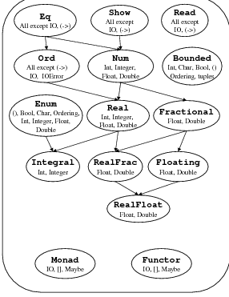

1. Числовые типы:
2. Булевый тип:
True
False
3. Символы и строки:
Символы записываются в одинарных кавычках и могут содержать произвольный символ Unicode.
'a'
'Й'
'\n'
Строки -- это списки символов, но также имеют собственный синтаксис. Строковые литералы можно записывать в двойных кавычках:
"Hello world"
4. Списки
5. Кортежи
6. Функции
7. Объединения
8. IO